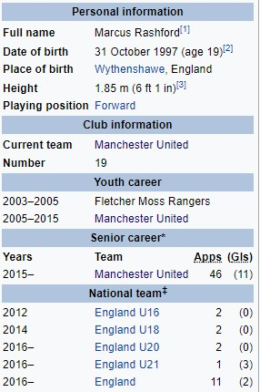

Маркус Рашфорд
Маркус Рашфорд (рођен 31.10.1997. Године) је професионални фудбалер Енглеске који игра као нападач за клуб Манчестер Јунајтед и репрезентацију Енглеске. Играч Манчестер Јунајтеда од седме године био је двапут у првом тиму (УЕФА Еуропа Леагуе) након повреде нападача Антони Марсијала и на свом првом мечу у Премијер Лиги у фебруару 2016 (против Арсенала) је дао два гола. Такође је постигао гол у свом првом дербију у Манчестеру. Расхфорд је има свој деби у Енглеској у мају 2016. године, постајући најмлађи Енглез који је постигао гол у првом међународном мечу. Био је изабран за УЕФА Еуро тим 2016.
